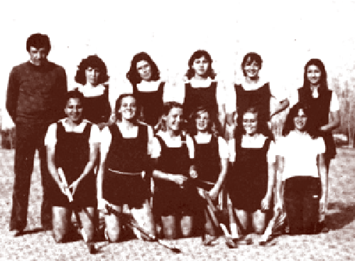
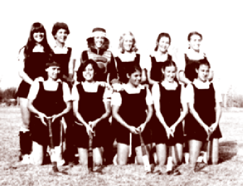

Historia
El Club tuvo su origen en 1955, cuando un grupo de jóvenes del departamento, unidos por quien sería por mucho tiempo el alma mater del club, Douglas Leycester Carbonell, se reunían en la plaza departamental, a planificar un futuro en el rugby de Mendoza. Se formó una segunda división, que se clasificó campeona invicta del torneo oficial, allí jugaban entre otros Bussi, Chiavaza, Cuzi, Jorge Narváez, Fernandez, Cirrincione, Mantovan, Quiroga, Wengorra y Pecci. En 1957 se presentaron bajo el nombre de Luján Sport Club, para formar al año siguiente la primera división. Entonces se agregaron al plantel Lucena, Villegas, Lukaes, Zapata, Daud, Santo Tomás, Fernandez y Hugo Alberto.
Estábamos ya en el año 1969 cuando se crea un nuevo deporte en la institución, que lo introdujo por primera vez en Mendoza el “Estrada”. El HOCKEY SOBRE CÉSPED FEMENINO trajo color, alegría y muchos lauros deportivos. Quizas no imaginaron Augusto Velasco y la Señorita Dora Marino la importancia que iba a adquirir este deporte en Mendoza. Fue realmente un día “histórico” aquel del primer entrenamiento, las alumnas Gruber, Carbonell, Company, Lola, Galdeano, Centeno, Lambrecht, Díaz, Cornejo, Lubelchit, Sánchez, Aguerre, Capella, Ramirez, Cardem, fueron las primeras interesadas. La semilla traida por Velasco fructificó rápidamente. Nacieron otros equipos y en 1971 se realizó el primer torneo oficial en la Provincia. En 1972, desavenencias entre autoridades del colegio y jugadores de rugby, obligaron a la separación de éstos, por lo que casi por un año todos los partidos se jugaron de visitantes. En 1975 fundaron definitivamente el PEUMAYÉN RUGBY CLUB, en el campo deportivo que actualmente posee la institución. Pero las situaciones desagradables no desaparecieron, y en julio de 1982 se dejó de jugar al rugby, pero nunca se nos olvidaron los gratos momentos pasados junto a grandes deportistas y personas. Nadie en el Club, se olvidará jamás del «gordo» Bertona, el «yoyo» Mendoza, el «flaco» Amadio y del «mellizo» Daniel Sabina entre otros. Y el club continuó con el hockey… Justamente este deporte había cosechado grandes triunfos, campeones durante los años 72, 73, terceras en el 74, campeón nuevamente en el 75. En el 77 ganó el primer torneo de campeones, para luego quedarse en forma definitiva con la Copa Challenger del mismo.
En 1960 este entusiasta y trabajador grupo, en su búsqueda de nuevos horizontes, dio nacimiento al PEUMAYEN RUGBY CLUB. Jugaban en un campo cedido por el señor Pincolini, que se encontraba pasando el puente sobre el canal San Martín, rumbo a Vistalba hacia la izquierda, en dirección paralela al zangón, en los terrenos de un aserradero. Tres años mas tarde y habiendo perdido la posibilidad de seguir jugando allí, se produce la fusión con el llamado Centro de Estudiantes de Luján. La institución nucleaba a todos los estudiantes secundarios del departamento… Esta alternativa era positiva, en la medida en que les permitía continuar existiendo como grupo. Tiempo después el rugby en el departamento desapareció momentáneamente, y varios de sus jugadores pasaron a integrar equipos importantes de la época como Obras Sanitarias, que con la llegada de los jugadores de Luján obtuvo los campeonatos de intermedia y de cuarta. Corría 1966 cuando se vuelve a jugar al rugby en Luján, con la figura incansable del Dr. Carbonell en el proyecto. Se intenta consagrar un rugby colegial dentro del Instituto José Manuel Estrada. Un año después, cuando volvieron los jugadores que habían emigrado a Obras Sanitarias se creó la primera división. También ese año, y con el apoyo de un grupo de padres, se compró el terreno que actualmente pertenece al club, pero se llegó a esto luego de muchas dificultades.
No obstante, el rugby en Luján tuvo un nuevo resurgimiento, esta vez de la mano de Luis Fernando Estrella, quien en 1985 forma las divisiones infantiles con el acompañamiento de una división inferior (juvenil). La creación y existencia de un Club de rugby y hockey no es fácil, pero sus integrantes, como el juego se los impone, no creen en claudicaciones. El fin es siempre avanzar; puede haber descansos, como aquí los hubo, pero nunca se abandona. Hoy la Institución tiene mas de 400 jugadores entre los dos deportes y sus propias instalaciones, un orgullo para Luján. Así que se torna difícil no encontrar en cualquier ámbito de la comunidad lujanina que alguien no haya pasado por el “Peuma”. Su presente es sinónimo del trabajo de un grupo de jugadores y jugadoras que se nutrieron de la filosofía de los pioneros del Club, y sobre todo, de lo que el rugby y el hockey da. Como sentido de cooperación aprendieron a enfrentar adversidad, desarrollaron el espíritu de lucha, de disciplina y se acostumbraron a no sentirse nunca vencidos. Pero lo más importante que estos deportes brinda es la amistad. «LOS AMIGOS DEL RUGBY Y DEL HOCKEY SERÁN AMIGOS TODA LA VIDA». Parece ser el axioma que se respira sobre las canchas del Bajo.